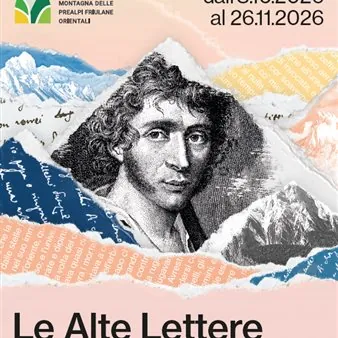

da gio 8 ott a gio 26 nov · dalle 20:30
Le Alte Lettere: Ugo Foscolo e la nascita del romanzo italiano
Progetto di divulgazione della cultura umanistica dedicato a Ugo Foscolo e il romanzo Italiano con approfondimenti alla scoperta di uno dei romanzi più importanti della letteratura italiana: "Le Ultime lettere di Jacopo Ortis". Progetto della Comunità di montagna delle Prealpi…
 Indicazioni
Indicazioni
- Costi e prenotazioni
- Costo non indicato · Prenotazione non indicata
- Programma
- Programma da verificare. Apri la fonte ufficiale per orari e possibili aggiornamenti.
- In caso di maltempo
- Nessuna indicazione specifica pubblicata.
- Note
- Acquisito automaticamente dalla fonte.
L’EVENTO
Descrizione completa
Progetto di divulgazione della cultura umanistica dedicato a Ugo Foscolo e il romanzo Italiano con approfondimenti alla scoperta di uno dei romanzi più importanti della letteratura italiana: "Le Ultime lettere di Jacopo Ortis".
08 ottobre 2026 ore 20:30 - Spilimbergo - Scuola Mosaicisti del Friuli Intervista a Napoleone sul Friuli e Venezia (alla vigilia della battaglia di Waterloo) ‘Intervista impossibile' con l'imperatore alla vigilia della battaglia di Waterloo, nella quale il grande uomo si lascia andare a riflessioni e ricordi della sua campagna d'Italia, la prima tra le tante vittoriose della sua straordinaria ascesa, e svela dove venne veramente firmato il cosiddetto 'trattato di Campoformido' (forse)... Approfondimento a cura di Andrea Zannini , docente di Storia moderna presso il Dipartimento di studi umanistici e del patrimonio culturale dell’Università di Udine Lettura scenica a cura di Martina Delpiccolo e Fabiano Fantini .
Dalle ore 19:00, sarà possibile visitare la Scuola Mosaicisti del Friuli.
Evento soggetto a prenotazione al seguente link https://forms.gle/CEFTrYqrbDfM23e67 fino ad esaurimento dei posti disponibili. 15 ottobre 2026 ore 20:30 - Maniago – Museo dell’Arte Fabbrile e delle Coltellerie Jacopo Ortis: l’invenzione di un personaggio Nel suo romanzo, Foscolo costruisce un personaggio inedito nel panorama letterario del primo Ottocento. Ispirandosi a un fatto di cronaca, dà vita a un vero e proprio alter ego nel quale letteratura e politica si uniscono in un intreccio originale. L’intervento si sofferma sui tratti costitutivi di un eroe della modernità, considerato a lungo un modello per generazioni di scrittori. Approfondimento a cura di Silvia Contarini , docente di Letteratura italiana presso il Dipartimento di studi umanistici e del patrimonio culturale dell’Università di Udine. L’approfondimento sarà accompagnato dalle musiche dell’ Orchestra d’Archi Blanc. Dalle 19:00, sarà possibile visitare il Museo. Evento soggetto a prenotazione al seguente link https://forms.gle/EmbxjxZz29eNxPh37 fino ad esaurimento dei posti disponibili. 22 ottobre 2026 ore 20:30 - Pinzano al Tagliamento – Centro Civico “Eugenio Candon” Dante nelle Ultime lettere di Jacopo Ortis Il poeta della Commedia ha un ruolo fondamentale nell’Ortis, come dimostrano le molte citazioni dei suoi versi che accompagnano, illustrandola tragicamente, la storia di Jacopo. L’intervento si soffermerà sul riuso politico di Dante nel romanzo, anche in prospettiva risorgimentale. Approfondimento a cura di Dino Pavlovic , dottore di ricerca presso il Dipartimento di studi umanistici e del patrimonio culturale dell’Università di Udine. Lettura scenica a cura di Francesco Corghi . 29 ottobre 2026 ore 20:30 - Arba - Biblioteca Civica "Adriana Rigutto" Un romanzo nel romanzo: la storia di Lauretta L’intervento indaga la presenza, nell’Ortis, di un vero e proprio romanzo nel romanzo: l’intermezzo narrativo rappresentato dalla vicenda malinconica di Lauretta, la fanciulla folle per amore: una figura femminile di grande fascino, debitrice dell’Ofelia shakespeariana, che Foscolo mutua da Sterne. Approfondimento a cura di Serena Costantini , dottoranda di ricerca presso il Dipartimento di studi umanistici e del patrimonio culturale dell’Università di Udin L’evento sarà supportato da un interprete LIS 12 novembre 2026 ore 20:30 - Cavasso Nuovo - Palazat I paesaggi dell’Ortis: dal bello al sublime Più che espressione di una realtà storica e geografica, la natura è nell’Ortis proiezione degli stati d’animo del protagonista: così la cornice dell’esilio (i colli Euganei) si presenta in forme idilliche e sentimentali nella prima parte del romanzo, consacrata al tema dell’illusione amorosa come rimedio alla delusione politica, e in forme selvagge e terribili nella parte finale, quando si spegne ogni speranza di riscatto politico e di felicità privata. Approfondimento a cura di Francesco Corghi , dottorando di ricerca presso il Dipartimento di studi umanistici e del patrimonio culturale dell’Università di Udine. Lettura scenica a cura di Massimo Somaglino . 26 novembre 2026 ore 20:30 - Vito d’Asio – Sala Parrocchiale di Piazza Fontana Jacopo Ortis lettore Nell’Ortis il protagonista del romanzo è ritratto spesso con un libro in mano, intento nella lettura ad alta voce o a colloquio con i suoi autori, antichi e moderni: attraverso la voce dei testi le passioni di Jacopo si comunicano all’esterno, in un dialogo che rinnova l’idea stessa di classico letterario, rendendolo parte viva di colui che legge e della sua esperienza esistenziale. Approfondimento a cura di Francesca Fedi , docente di Letteratura italiana presso il Dipartimento di Filologia, Letteratura e Linguistica dell’Università di Pisa. Lettura scenica a cura di Martina Delpiccolo e Fabiano Fantini .
IL PROGRAMMA
Programma e orari
Appuntamenti raccolti dalle fonti elencate. Dove manca un orario, non è ancora disponibile in questa scheda.
Programma pubblicato
- Dal 2026-10-08 al 2026-11-26
INFORMAZIONI UTILI
Prima di partire
- Controllare la fonte prima di partire.
ORGANIZZAZIONE